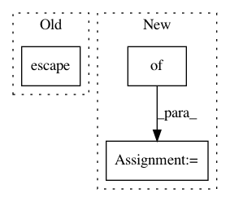

555363bd1809fa6acd15e3e61f0a45a38c1ca7d5,tests/python/pants_test/base/test_exception_sink.py,TestExceptionSink,test_set_invalid_log_location,#TestExceptionSink#,33
Before Change
def test_set_invalid_log_location(self):
self.assertFalse(os.path.isdir("/does/not/exist"))
sink = self._gen_sink_subclass()
err_rx = re.escape(
"The provided exception sink path at "/does/not/exist" is not writable or could not be created: [Errno 13]")
with self.assertRaisesRegexp(ExceptionSink.ExceptionSinkError, err_rx):
sink.reset_log_location("/does/not/exist")
After Change
// creating a new directory with safe_mkdir(), Linux errors out trying to create the directory
// for its log files with safe_open(). This may be due to differences in the filesystems.
// TODO: figure out why we error out at different points here!
err_str = Platform.current.match({
Platform.darwin: "The provided exception sink path at "/" is not writable or could not be created: [Errno 21] Is a directory: "/".",
Platform.linux: "Error opening fatal error log streams for log location "/": [Errno 13] Permission denied: "/.pids""
})
with self.assertRaisesWithMessageContaining(ExceptionSink.ExceptionSinkError, err_str):
sink.reset_log_location("/")
def test_log_exception(self):
In pattern: SUPERPATTERN
Frequency: 3
Non-data size: 3
Instances
Project Name: pantsbuild/pants
Commit Name: 555363bd1809fa6acd15e3e61f0a45a38c1ca7d5
Time: 2019-12-14
Author: 1305167+cosmicexplorer@users.noreply.github.com
File Name: tests/python/pants_test/base/test_exception_sink.py
Class Name: TestExceptionSink
Method Name: test_set_invalid_log_location
Project Name: akkana/scripts
Commit Name: 037be121696158ecb3f2da13c8409b1ae311b0b4
Time: 2021-01-16
Author: akkana@shallowsky.com
File Name: musicplayer.py
Class Name: MusicWin
Method Name: update_content
Project Name: Pinafore/qb
Commit Name: e274abd78ec052dadae737b83a50531f0f8d7666
Time: 2018-02-02
Author: sjtufs@gmail.com
File Name: qanta/guesser/tied.py
Class Name:
Method Name: